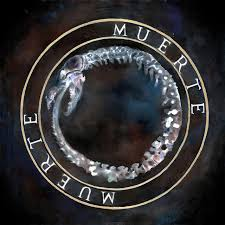

<html>
<head>
<titlte>Información personal</title>
</head>
<body background="fondo.jpg">
<pre>
<center> <font face="Book Antiqua" size=4.56 color="white"> Hablemos sobre la música de Canserbero. Este rapero venezolano, cuyo nombre real es
  Tyrone González, es conocido por su lírica profunda y reflexiva, así como por su estilo único que fusiona el rap con elementos del rock y el reggae.
  Su música a menudo aborda temas como la vida, la muerte, la injusticia social, la política y las luchas personales.</font></center>

  <center<center> <font face="Book Antiqua" size=4.56 color="white"> ALGUNOS ALBUMES DE CANSERBERO MAS FAMOSOS SON:</font></center>


<center><font face="Book Antiqua" size=4.56 color="white "> Älbum " MUERTE "</font></center>
 <center> </img></center>
  
  <center> <font face="Book Antiqua" size=4.56 color="white">"Muerte" es el segundo álbum de estudio del rapero venezolano Canserbero, lanzado en 2012. Este álbum es una obra fundamental en su carrera y aborda temas
  profundos y oscuros, centrados en la muerte, la violencia, la injusticia, y la introspección personal. A diferencia de su álbum anterior, "Vida" (2010), que
  explora temas más positivos y esperanzadores, "Muerte" se sumerge en las sombras del alma humana y la realidad social.</font></center>

<font face="Book Antiqua" size=5 color="white "><b>Temas y contenido del álbum:</b></font>
<font face="Bell MT" size=4.5 color="white ">Lucha interna y existencialismo: El álbum está cargado de reflexiones sobre la muerte y la mortalidad. Canserbero explora el miedo a la muerte, la inevitabilidad
  del final, y la lucha interna entre el bien y el mal. Canciones como "Es Épico" y "Maquiavélico" reflejan esta batalla personal.</font>

<font face="Book Antiqua" size=5 color="white "><b>Crítica social::</b></font>
 <font face="Bell MT" size=4.5 color="white"> Muchas canciones del álbum son una crítica directa a la violencia en la sociedad, la corrupción, y la injusticia. Canserbero se expresa con crudeza y
  sin tapujos sobre la situación de su país y el mundo en general.</font>

<font face="Book Antiqua" size=5 color="white "><b>Narrativa y cuentos:</b></font>
 <font face="Bell MT" size=4.5 color="white "> El álbum también incluye canciones narrativas que cuentan historias de violencia y muerte, como "C'est la Mort", donde aborda las consecuencias 
  de la venganza y la pérdida.</font>

<font face="Book Antiqua" size=5 color="white "><b>¿Por qué lo escribió?:</b></font>
<font face="Bell MT" size=4.5 color="white ">Canserbero, cuyo nombre real era Tyrone González, tenía una visión muy clara sobre el mundo y la sociedad que lo rodeaba. La razón detrás de "Muerte" está vinculada a su
  experiencia personal y su percepción de la realidad. Se sabe que Canserbero fue un artista profundamente sensible y consciente de las problemáticas sociales de su entorno.
  La violencia y la muerte eran temas cercanos a su vida, especialmente en el contexto de la situación en Venezuela.</font>

  
  <font face="Book Antiqua" size=4.5 color="white ">Además, la dualidad entre sus álbumes "Vida" y "Muerte" refleja su deseo de mostrar ambas caras de la existencia humana: la alegría y el dolor, la esperanza y la 
  desesperación, la vida y la muerte. "Muerte" es la culminación de esta exploración, una especie de catarsis personal donde el artista canaliza su frustración, su rabia, y 
  su tristeza a través de la música.</font>

<font face="Book Antiqua" size=5 color="white "><b>Impacto y legado:</b></font>
 <font face="Bell MT" size=4.5 color="white ">"Muerte" se ha convertido en un álbum de culto dentro del rap en español, admirado por su lirismo profundo y su capacidad para conectar con el oyente a un nivel emocional 
  intenso. Canserbero logró con este álbum consolidarse como uno de los artistas más influyentes del rap latinoamericano, dejando un legado que sigue vivo a pesar de su trágica muerte en 2015.</font>


<center><font face="Book Antiqua" size=4.56 color="white "> Älbum " VIDA "</font></center>
 <center> </img></center>


<center> <font face="Book Antiqua" size=4.56 color="white">"Vida" es el primer álbum de estudio del rapero venezolano Canserbero, lanzado en 2010. Este álbum es considerado una obra maestra en el rap en español debido a 
  su profundo contenido lírico y su capacidad para conectar con las emociones y experiencias de la audiencia. En contraste con su siguiente álbum, "Muerte", que aborda temas oscuros y profundos, "Vida" se enfoca en
  aspectos más luminosos de la existencia, como el amor, la esperanza, la lucha personal, y la superación.</font></center>

<font face="Book Antiqua" size=5 color="white "><b>Temas y contenido del álbum:</b></font>
<font face="Bell MT" size=4.5 color="white ">
  Reflexiones sobre la vida:
  A lo largo del álbum, Canserbero reflexiona sobre la vida, el propósito de la existencia, y las experiencias que nos forman como personas. Canciones 
  como "Es épico" y "Pensando en ti" expresan esta visión positiva y profunda sobre la vida.

  Amor y relaciones: 
  En canciones como "C’est la vie", Canserbero aborda el amor y las relaciones de una manera sincera y honesta, explorando tanto los aspectos positivos como los desafíos que enfrentamos en nuestras conexiones 
  con los demás.

  Conciencia social y crítica: 
  Aunque "Vida" es más optimista en tono, Canserbero no se aleja de su papel de crítico social. Canciones como "Mundo de piedra" analizan la dureza de la vida y las injusticias que enfrenta la sociedad, manteniendo 
  un equilibrio entre el reconocimiento de los problemas y la esperanza de un futuro mejor.

  Superación personal:
  Muchas de las letras del álbum invitan al oyente a reflexionar sobre sus propias luchas y cómo superarlas. Canserbero ofrece mensajes de resiliencia y crecimiento, subrayando la importancia de seguir adelante 
  a pesar de las dificultades.
</font>
<font face="Book Antiqua" size=5 color="white "><b>¿Por qué lo escribió?:</b></font>
<font face="Bell MT" size=4.5 color="white ">Canserbero creó "Vida" como una expresión de su visión del mundo y su experiencia personal. El álbum refleja un equilibrio entre lo positivo y lo negativo, pero desde 
  un enfoque que resalta la belleza y el valor de la vida. Este proyecto nace de su deseo de conectar con su audiencia a un nivel emocional profundo y ofrecerles una guía a través de sus propias experiencias y
  observaciones sobre la vida.</font>

 <font face="Bell MT" size=4.5 color="white ">"Vida" también se presenta como una contraposición a su posterior álbum "Muerte". Ambos trabajos están interrelacionados y se complementan, mostrando los dos lados
   de la existencia humana: la luz y la oscuridad, la vida y la muerte. </font>

<font face="Book Antiqua" size=5 color="white "><b>Impacto y legado:</b></font>
<font face="Bell MT" size=4.5 color="white ">"Vida" consolidó a Canserbero como uno de los referentes más importantes del rap en español. Su enfoque lírico, cargado de introspección y crítica social, resonó
  profundamente con sus seguidores, quienes valoraron su autenticidad y su capacidad para hablar sobre temas universales de una manera accesible y poderosa. El álbum sigue siendo influyente en la escena del 
  rap latinoamericano y es considerado una pieza fundamental para entender la obra de Canserbero. A través de "Vida", Tyrone González logró trascender las barreras del género, llegando a un público diverso que 
  valora la honestidad y la profundidad de su música. </font>


    

<a href="CANSERBERO_OFICIAL.html"></img>
</a>
